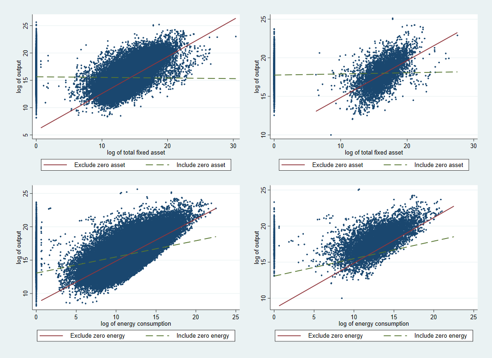

| Variables | TFP |
|---|---|
| tariff | -0.371*** |
| SPS | -0.381 |
| TBT | 0.074 |
| Pre-shipment inspection | 0.16 |
| licensing | -0.896*** |
| price control | -10,221 |
| competition | -2.204* |
| export-related | -0.291 |
| dummy FDI | 0.061 |
Depok, 30 Oktober 2023
I Made Krisna Gupta
Master dari UI-VU Amsterdam di bidang ekonomi
S3 di Australian National University
Senior Fellow di CIPS Indonesia
Staff pengajar di Politeknik APP Jakarta
Social links:
resume di imedkrisna.github.io
Blog di krisna.or.id
twitter di @imedkrisna
larangan ekspor nikel dan industrialisasi EV.
Omnibus Law dan Sovereign Wealth Fund.
tarif dan NTM terhadap impor, kesejahteraan, dan produktivitas.
Kompetisi dan keseimbangan harga di industri makanan.
Kebijakan perdagangan, industrialisasi, dan dampak lingkungan.
Tentang paper terbaru saya.
research process from problem setting, objectives, novel value, hypothesis, methodology, testing, results and conclusions.
Some tips
Q & A about this paper, writing in general, or econ in general is all fine!
Indonesia sedang mengejar pertumbuhan ekonomi yang terfokus pada pertumbuhan manufaktur.
Di era Global Value Chain (GVC), mengimpor nilai tambah melalui backward linkage adalah strategi yang baik (World Bank, 2020):
Penilitian ini bermaksud mengevaluasi dampak dari berbagai jenis hambatan perdagangan terhadap produktivitas industri.
Ditemukan bahwa tarif terhadap barang yang diimpor oleh perusahaan mengurangi produktivitas perusahaan tersebut.
Diantara kebijakan non-tarif, trade licensing dan kuota memiliki pengaruh yang buruk terhadap produktivitas.
Dampak yang heterogen: Perusahaan kecil terdampak lebih serius daripada yang besar.
Indonesia wants to grow its manufacturing capacity using various intervention (a.k.a. the infant industry argument).
Basically, how policy \(\rightarrow\) industrial growth.
Policy definition is straightforward: tariff and non-tariff (this one’s a bit harder)
how to measure industrial performance? In this paper, TFP is used.
Vial (2006) dan Marquez-Ramos (2020):
zero reports sangat berpengaruh.

\[Y_{it}=AL_{it}^{\beta_l}K_{it}^{\beta_k}M_{it}^{\beta_m}N_{it}^{\beta_n} \ \ \ \ \ (1)\] - transformasi log:
\[y_{it}= \beta_0 + \beta_l l_{it}+ \beta_k k_{it}+ \beta_m m_{it} + \beta_n n_{it} +\mu_{it} \ \ \ \ \ (2)\]
Ada informasi asimetris di mana kapital dan material bersifat endogen.
investasi dan material digunakan sebagai instrumen untuk eror yang tidak random.
Eror yang tidak random mengikuti first-order Markov process (Levinsohn dan Petrin, 2003)
Di Stata, command levpet dapat digunakan. Sekarang ada prodest.
\[y_{it}= \beta_0 + \beta_l l_{it} + \beta_n n_{it} + \phi (m_{it},k_{it})+\mu^*_{it} \ \ \ \ \ (3)\]
\[TFP_{it}=y_{it}-\hat{\beta}_l l_{it}+\hat{\beta}_n n_{it}+\hat{\beta}_m m_{it}+\hat{\beta}_k k_{it} \ \ \ \ \ (4)\]
\[C_{\theta i t}=\frac{\sum TP_{\theta scit}V_{\theta scit}}{\sum V_{\theta scit}} \ \ \ \ \ (5)\]
\[tfp_{it}=\gamma_0+\sum_{\theta} \gamma_{\theta}c_{\theta i t}+\sum_{\theta} \delta_{\theta}c_{\theta i t}*l_{it}+FO_{it} \\ +\alpha_i+ISIC_i+ \eta_{it} \ \ \ \ \ (6)\]
| Variables | TFP |
|---|---|
| tariff | -0.371*** |
| SPS | -0.381 |
| TBT | 0.074 |
| Pre-shipment inspection | 0.16 |
| licensing | -0.896*** |
| price control | -10,221 |
| competition | -2.204* |
| export-related | -0.291 |
| dummy FDI | 0.061 |
| Variables | TFP |
|---|---|
| tariff.l | 0.068*** |
| SPS.l | 0.062 |
| TBT.l | 0.013 |
| Pre-shipment inspection.l | -0.043 |
| licensing.l | 0.147*** |
| price control.l | 1,666 |
| competition.l | 0.413** |
| export-related.l | 0.075 |
| foreign ownership | 0.024* |
Tarif impor, perijinan impor, dan keistimewaan BUMN:
| Variables | OLS | TWFE |
|---|---|---|
| tariff | -0.260*** | -1.368*** |
| SPS | -0.176 | -1.650*** |
| TBT | 0.064 | 0.452* |
| Pre-shipment | 0.066 | 1.997*** |
| licensing | -0.818*** | -4.455*** |
| Price-control | 14,832*** | 6,015 |
| competition | -0.999 | -2.788*** |
| Export-related | -0.246 | -0.617* |
| foreign dummy | 0.028 | 0.091* |
| Variables | OLS | TWFE |
|---|---|---|
| tariff*l | 0.043*** | 0.251*** |
| SPS*l | 0.021 | 0.288*** |
| TBT*l | -0.008 | -0.095** |
| Pre-shipment*l | -0.008 | -0.345*** |
| licensing*l | 0.140*** | 0.809*** |
| Price-control*l | -2,312*** | -802 |
| competition*l | 0.207 | 0.360** |
| Export-related*l | 0.042 | 0.132** |
| % foreign | -0.009 | -0.007 |
Hasil dari tarif impor dan PI cukup robust.
Secara umum, tarif dan PI berkontribusi mengurangi pertumbuhan penyerapan tenaga kerja.
Penelitian ini memperkaya bukti bahwa restriksi perdagangan justru mengurangi produktivitas manufaktur.
GVC memperbesar dampak restriksi perdagangan.
Perubahan kebijakan perdagangan berdampak besar ke perusahaan kecil.
Shows difference between WITS tariff (widely used by researchers) vs scrapped tariff.
Adds to the compilation of problems with SI data.
Shows heterogeneous effects & fit in the heterogeneous & superstar firms literature.
Shows the importance of imported input, fits the new industrial policy literature.
TFP mungkin merefleksikan market power.
Eksportir dan importir sangat berbeda dengan perusahaan lain.
Data yang tidak sempurna.
Gali literatur terkini
Pahami teori dan mekanisme, derivasi jika perlu
Simpulkan literatur, temukan gap, kenali kontribusi kita, lalu buat hipotesis.
Siapkan mekanisme identifikasi bukti dan kebijakan.
Waktu paling banyak habis di sini.
Memahami apakah data yg diperlukan ada semua
Data Indonesia umumnya tidak machine friendly
Siapkan dokumentasi yang jelas.
sering-sering tanya ke pembimbing anda.
jangan pasif. pembimbing anda pasti sibuk. Anda yang harus tau mau tanya apa.
Kalau bimbingan jangan kelamaan. mendingan bimbingan sering tapi progres minim daripada dateng-dateng udah bab 5. Dijamin salah semua.
gak perlu terlalu takut dengan seminar dan sidang. yang penting menguasai.
Márquez-Ramos, L. (2020). A Survey of Papers Using Indonesian Firm-Level Data: Research Questions and Insights for Novel Policy-Relevant Research in Economics. Bulletin of Indonesian Economic Studies, 1-49. https://doi.org/10.1080/00074918.2020.1862410
Vial, V. (2006). New estimates of total factor productivity growth in indonesian manufacturing. Bulletin of Indonesian Economic Studies, 42(3), 357-369. https://doi.org/10.1080/00074910601053227
Amiti, Mary, and Jozef Konings. 2007. “Trade Liberalization, Intermediate Inputs, and Productivity: Evidence from Indonesia.” The American Economic Review 97 (5): 1611-1638. https://doi.org/10.1257/000282807783219733
An, Galina, and Keith E. Maskus. 2009. “The Impacts of Alignment with Global Product Standards on Exports of Firms in Developing Countries.” World Economy 32 (4): 552-574. https://doi.org/10.1111/j.1467-9701.2008.01150.x
Bas, Maria, and Vanessa Strauss-Kahn. 2014. “Does importing more inputs raise exports? Firm level evidence from France.” Review of World Economics 150 (2): 35.
Cadot, Olivier, Alan Asprilla, Julien Gourdon, Christian Knebel, and Ralf Peters. 2015. Deep Regional Integration and Non-Tariff Measures: A Methodology for Data Analysis. United Nations (New York and Geneva: United Nations)
Castellani, Davide, and Claudio Fassio. 2019. “From new imported inputs to new exported products. Firm-level evidence from Sweden.” Research Policy 48 (1): 322-338. https://doi.org/10.1016/j.respol.2018.08.021
Fugazza, Marco, Marcello Olarreaga, and Christian Ugarte. 2017. “On the heterogeneous effects of non-tariff measures: Panel evidence from Peruvian firms.” UNCTAD Blue Series Papers 77. https://ideas.repec.org/p/unc/blupap/77.html
Ing, Lili Yan, Miaojie Yu, and Rui Zhang. 2019. “the evoltion of export quality: China and Indonesia.” In World Trade Evolution: Growth, Productivity and Employment, edited by Lili Yan Ing and Miaojie Yu. Abingdon, New York: Routledge.
Levinsohn, James, and Amil Petrin. 2003. “Estimating Production Functions Using Inputs to Control for Unobservables.” The Review of economic studies 70 (2): 317-341. https://doi.org/10.1111/1467-937x.00246
Munadi, Ernawati. 2019. Indonesian non-tariff measures: updates and insights. Economic Research Institute for ASEAN and East Asia (Jakarta: Economic Research Institute for ASEAN and East Asia).
Pierola, Martha Denisse, Ana Margarida Fernandes, and Thomas Farole. 2018. “The role of imports for exporter performance in Peru.” The World Economy 41 (2): 550-572. https://doi.org/10.1111/twec.12524
Pane, Deasy, and Arianto Patunru. 2019. “Does export performance improve firm performance? Evidence from Indonesia.” Working Papers in Trade and Development 05
World Bank. 2020. World Development Report 2020 : Trading for Development in the Age of Global Value Chains. Washington, DC: World Bank.
Irwin, D. A. (2022). The Trade Reform Wave of 1985-1995. National Bureau of Economic Research Working Paper Series, No. 29973. https://doi.org/10.3386/w29973
Table 1. Firms’ characteristics, 2008-2012
| Characteristics | All_SI | Non_customs | Customs_only |
|---|---|---|---|
| foreign ownership (%) | 8.15 | 5.96 | 34.77 |
| foreign ownership (%) | (26.17) | (22.60) | (45.06) |
| fraction of output exported (%) | 0.23 | 0.21 | 0.4 |
| fraction of output exported | (37.52) | (0.37) | (0.42) |
| fraction of input imported (%) | 0.08 | 0.07 | 0.31 |
| fraction of input imported (%) | (0.24) | (0.21) | (0.38) |
| no. of labour employed | 191.07 | 162.75 | 535.44 |
| no. of labour employed | (711.73) | (602.46) | (1,457.65) |
| capital stock (Million IDR) | 198 | 194 | 250 |
| capital stock (Million IDR) | (44,800.00) | (46,500) | (10,400) |
| total intermediate input (Million IDR) | 50.8 | 41 | 170 |
| total intermediate input (Million IDR) | (617.00) | (515) | (1,330) |
| total output (Million IDR) | 90.3 | 73.3 | 296 |
| total output (Million IDR) | (958.00) | (861) | (1,740) |
| total value added (Million IDR) | 38.5 | 31.6 | 123 |
| total value added (Million IDR) | (455.00) | (414) | (789) |
| value added per labour (IDR) | 137,987.10 | 126,074 | 282,857 |
| value added per labour (IDR) | (2,515,300.00) | (2,600,177) | (1,012,159) |
| No. of observation | 117,598 | 108,662 | 8,915 |
Table 2. Mean (St.Dev) of each NTM for all HS-6-digits
| NTM | Codes | N2008 | N2009 | N2010 | N2011 | N2012 | Examples |
|---|---|---|---|---|---|---|---|
| Sanitary & Phytosanitary (SPS) | A | 1.715 | 2.337 | 2.222 | 2.255 | 2.774 | Authorization requirements |
| Sanitary & Phytosanitary (SPS) | A | (2.644) | (4.018) | (3.950) | (4.054) | (5.128) | Quarantine requirements |
| Technical Barrier to Trade (TBT) | B | 0.481 | 0.455 | 0.641 | 0.682 | 0.663 | Testing requirements |
| Technical Barrier to Trade (TBT) | B | (0.962) | (0.978) | (1.334) | (1.361) | (1.352) | labeling requirements |
| Pre-shipment inspections and other formalities | C | 0.562 | 0.466 | 0.443 | 0.462 | 0.776 | pre-shipment inspection |
| Pre-shipment inspections and other formalities | C | (1.202) | (1.081) | (1.059) | (1.046) | (1.075) | only trough specific ports |
| Non-automatic licensing, quotas, QC, etc | E | 0.623 | 0.56 | 0.605 | 0.618 | 0.594 | licensing |
| Non-automatic licensing, quotas, QC, etc | E | (0.809) | (0.818) | (0.873) | (0.861) | (0.853) | quota |
| Price-control measures, extra taxes, charges | F | 0 | 0 | 0.015 | 0.014 | 0.016 | customs service fee |
| Price-control measures, extra taxes, charges | F | (0.000) | (0.000) | (0.168) | (0.165) | (0.168) | consumption tax |
| Measures affecting competition | H | 0.019 | 0.052 | 0.05 | 0.048 | 0.046 | Only SOEs |
| Measures affecting competition | H | (0.139) | (0.238) | (0.233) | (0.229) | (0.224) | - |
| Export-related measures | P | 0.901 | 0.704 | 0.708 | 0.683 | 1.172 | export permit |
| Export-related measures | P | (1.172) | (1.132) | (1.109) | (1.098) | (1.465) | export quota |
| observations | - | 1,675 | 2,204 | 2,318 | 2,400 | 2,510 | - |
Table 3. Tariff from MoF regulations (left) compared to WITS (right)
| Kind | T2008 | T2009 | T2010 | T2011 | T2012 |
|---|---|---|---|---|---|
| MFN | 7.049 | 7.612 | 6.928 | 6.975 | 6.96 |
| MFN | (12.213) | (12.536) | (8.037) | (7.231) | (7.145) |
| ASEAN | 2.478 | 2.49 | 0.15 | 0.15 | 0.15 |
| ASEAN | (11.094) | (11.206) | (4.559) | (4.559) | (4.559) |
| China | 7.049 | 3.819 | 2.193 | 2.208 | 1.941 |
| China | (12.213) | (12.673) | (7.941) | (7.941) | (7.927) |
| South Korea | 7.049 | 2.624 | 1.912 | 1.912 | 1.542 |
| South Korea | (12.213) | (12.265) | (7.131) | (7.131) | (7.102) |
| India | 7.049 | 7.612 | 6.394 | 5.874 | 5.341 |
| India | (12.213) | (12.536) | (7.809) | (7.517) | (7.322) |
| Japan | 6.11 | 4.639 | 3.274 | 2.618 | 2.23 |
| Japan | (11.967) | (12.356) | (7.353) | (7.114) | (6.487) |
| ANZ | 7.049 | 6.446 | 2.948 | 2.278 | 1.545 |
| ANZ | (12.213) | (11.922) | (6.765) | (6.318) | (6.065) |
| Kind | T2008 | T2009 | T2010 | T2011 | T2012 |
|---|---|---|---|---|---|
| MFN | 7.762 | 7.595 | 7.564 | 7.051 | 7.053 |
| MFN | (12.631) | (12.456) | (12.412) | (7.015) | (7.016) |
| ASEAN | - | 1.84 | 1.843 | 0.152 | 0.152 |
| ASEAN | - | (11.079) | (11.067) | (4.285) | (4.287) |
| China | - | 3.665 | 2.743 | 1.85 | 1.579 |
| China | - | (12.342) | (12.392) | (6.853) | (6.823) |
| South Korea | - | 2.564 | 2.56 | 1.698 | 1.326 |
| South Korea | - | (12.087) | (12.084) | (6.395) | (6.349) |
| India | - | - | - | 5.409 | 4.991 |
| India | - | - | - | (6.726) | (6.620) |
| Japan | - | - | - | - | - |
| Japan | - | - | - | - | - |
| ANZ | - | - | - | - | - |
| ANZ | - | - | - | - | - |
Table 5a. Simple average
| Variable | Mean | St.Dev. | Min | Max |
|---|---|---|---|---|
| Tariff | 3.503 | 4.971 | 0 | 150 |
| SPS (A) | 0.108 | 0.718 | 0 | 29 |
| TBT (B) | 0.140 | 0.663 | 0 | 13 |
| Pre-shipment inspection (C) | 0.028 | 0.214 | 0 | 5 |
| Licensing, quota, etc (E) | 0.321 | 0.550 | 0 | 6 |
| Price control etc (F) | 0.000 | 0.008 | 0 | 2 |
| Competition measures (H) | 0.007 | 0.083 | 0 | 2 |
| Export-related (P) | 0.063 | 0.376 | 0 | 7 |
Table 5b. Coverage Ratio
| Variable | Mean | St.Dev. | Min | Max |
|---|---|---|---|---|
| Tariff Coverage Ratio (T) | 3.420 | 5.646 | 0 | 150 |
| Coverage ratio A | 0.246 | 0.931 | 0 | 19 |
| Coverage ratio B | 0.202 | 0.478 | 0 | 9 |
| Coverage ratio C | 0.059 | 0.237 | 0 | 4 |
| Coverage ratio E | 0.337 | 0.468 | 0 | 6 |
| Coverage ratio F | 0.000 | 0.001 | 0 | 0 |
| Coverage ratio H | 0.014 | 0.083 | 0 | 1 |
| Coverage ratio P | 0.110 | 0.353 | 0 | 7 |